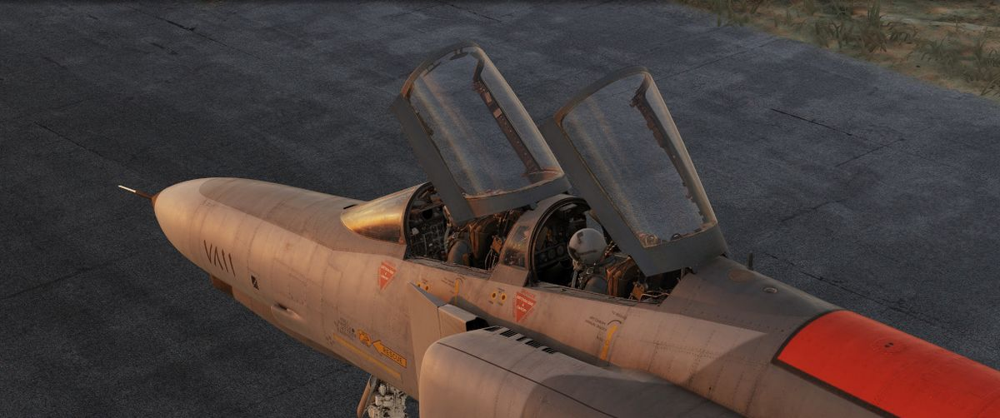
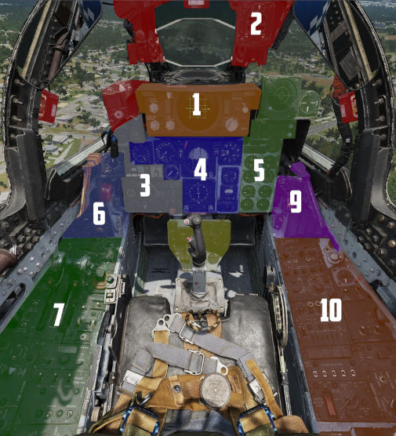
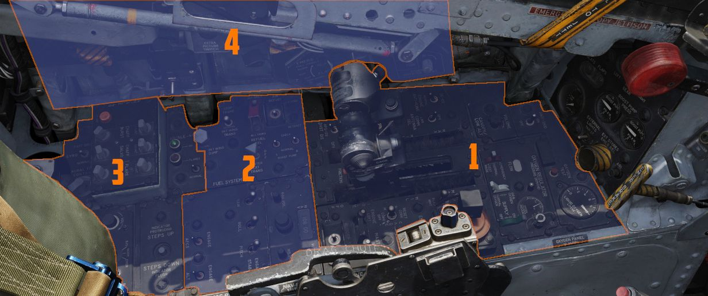

Chaque commande nommée et expliquée, place avant et place arrière. À garder ouvert à côté du jeu pendant les premières heures : les leçons du Pas à pas renvoient ici dès qu'elles citent un panneau qu'on n'a pas encore vu.
Page de squelette — annotations à écrire
Les planches sont en place. Ce qui manque : le repérage numéroté de chaque commande et le tableau qui va avec. Le guide de Chuck, livré avec le module, contient déjà ce travail panneau par panneau — c'est la source à dépouiller en priorité, en reprenant la nomenclature du manuel officiel plutôt qu'une traduction improvisée.
Deux postes, deux rôles
Le F-4E se pilote de l'avant et se bat depuis l'arrière. La place pilote a les commandes de vol, les moteurs et le viseur ; la place WSO a le radar, la navigation et la désignation. Certaines choses sont dupliquées, beaucoup ne le sont pas — c'est ce partage que cette page doit rendre évident.
Vue d'ensembleextérieur

Les deux postes, verrières ouvertes — pilote devant, WSO derrière.Original ↗
Planche absente du dossier img/.
Place pilote — vue généralePilote

Le poste pilote avec ses repères numérotés — c'est cette planche qui servira de base au tableau ci-dessous.Original ↗
Planche absente du dossier img/.
N°
Commande
À quoi ça sert
repérage à établir depuis le guide de Chuck
Place pilote — console gauchePilote

Manettes des gaz, carburant, AFCS, contre-mesures.Original ↗
Planches extraites du manuel officiel Heatblur et hébergées dans F4E/img/. La section A · Découverte & cockpit du cursus couvre déjà ces planches en 8 leçons — cette page en sera la version consultable en un coup d'œil.